Suivi des Régimes de Temps Toutes Saisons
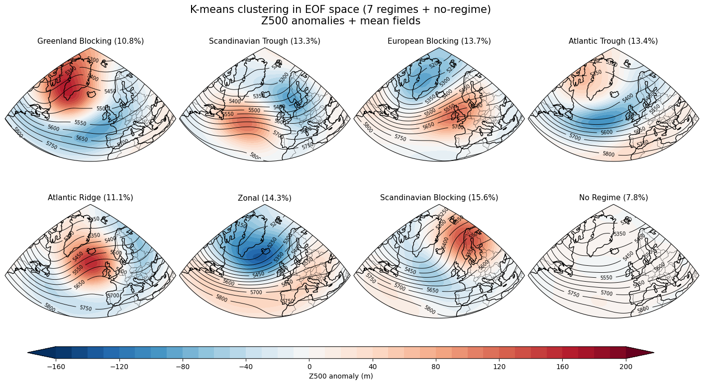
Accès aux pages de visualisation de composites et de monitoring des régimes de temps "toutes saisons" :
-
Consulter les cartes composites des régimes de temps toutes saisons à travers l'onglet "Cartes composites"
-
Suivi quotidien des régimes de temps toutes saisons à travers l'onglet "Suivi quotidien"
-
Suivi climatique des régimes de temps toutes saisons à travers l'onglet "Suivi climatique"
Présentation de la méthode d'obtention des régimes de temps "toutes saisons" :
Période considérée : 1960-2025
Résolution : 1°
Domaine : latitude (30, 90); longitude (-80, 40)
Pas de temps : journalier
Données : ERA5 Z500
Etape 1 : Nous commençons par le calcul de la moyenne des 66 années pour chaque pas de temps de 24h calendaires sur la période 1960-2025.
Par exemple, considerons le calcul de la moyenne du 15 janvier 2010 à 09UTC : Nous calculons la moyenne des 15 janvier à 09UTC de toutes les années sur la période 1960-2025. Nous répétons ensuite cette methode pour tous les jours de notre période (Fig 1.1).
Nous calculons une moyenne glissante sur 60 jours afin d'établir une moyenne mobile climatologique sur 60 jours pour la période 1960-2025 (Fig 1.2).
La moyenne glissante est calculée en faisant une moyenne sur 60 jours (30 jours avant la date calculée, 30 jours après la date calculée) en prenant comme valeurs pour chaque jour les valeurs moyennées.
Les valeurs moyennes quotidiennes de Z500 sont pondérées par le cosinus de la latitude afin de prendre en compte le fait qu'à maille égale, on ne represente pas la même surface.
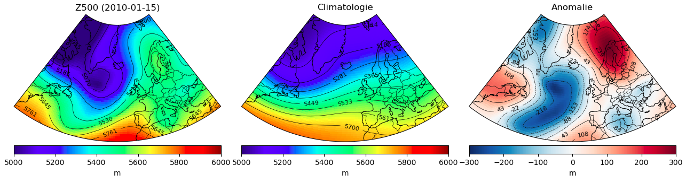
Etape 2 : Nous procèdons ensuite au calcul des anomalies de Z500.
Pour cela, nous soustrayons notre moyenne glissante calculée à l'Etape 1 à la valeur qui correspond au jour dont on calcule l'anomalie (Fig 1.3).
On applique ensuite un filtre passe-bas, qui correspond à une moyenne glissante sur 10 jours (-5 jours, +5 jours), aux anomalies pour faire ressortir les variabilités de basses frequences (au-delà des échelles de temps synoptiques) et supprimer l'influence de la variabilité à l'echelle synoptique telles que les perturbations des moyennes latitudes (Fig 2.1).
Enfin, nous éliminons la tendance des données pour tenir compte de l'augmentation de la valeur moyenne de Z500 due à la dilatation thermique de la basse troposphère à cause du rechauffement climatique (4,7 m par décennie ; Fig 3). Cette tendance est éliminée en supprimant la tendance linéaire de la valeur moyenne quotidienne de Z500 (pondérée par le cosinus de la latitude) dans le domaine des régimes (qui correspond ici à 8,1m pour le 2010/01/15).
On obtient ainsi nos anomalies detrendées (Fig 2.2).
Nous adoptons cette approche, plutôt que d'éliminer simplement la tendance de chaque point de grille, afin de conserver les tendances résultant des changements de circulation qui peuvent se projeter sur, ou être causées par, les tendances de la fréquence des régimes.
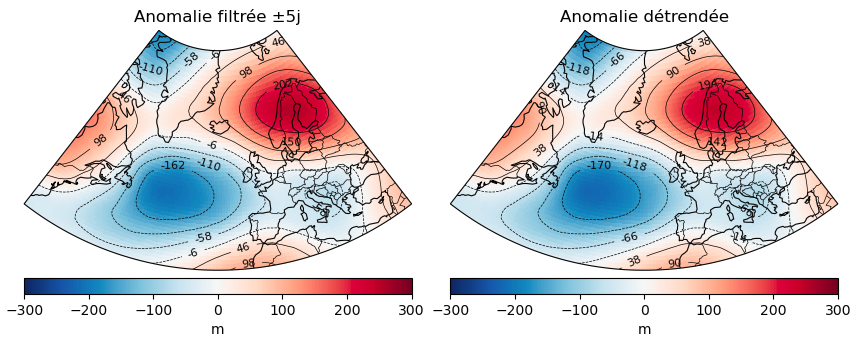
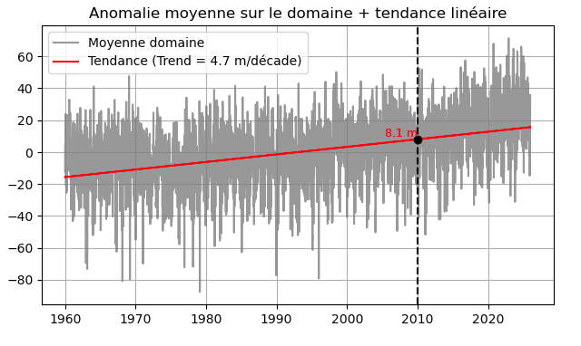
Etape 3 : Normalisation des anomalies de Z500.
Les anomalies étant beaucoup plus importantes et possédant une plus grande variabilité en hiver qu'en été, nous normalisons les anomalies de Z500 afin de retirer cette variabilité d'amplitude saisonnière tout en préservant les variations spatiales (Fig 4).
Cela permet de se focaliser sur la configuration spatiale des flux dans le champ d'anomalies.
Pour normaliser ces anomalies, nous divisons les anomalies de Z500 par un scalaire calendaire représentant la variabilité climatologique des anomalies de Z500 du jour correspondant (Fig 5).
Ce scalaire calendaire, calculé sur le domaine, est defini comme la moyenne spatiale de la déviation standard glissante climatologique sur 30 jours (15 jours avant, 15 jours après).
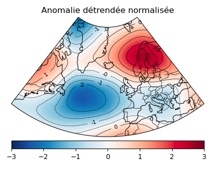
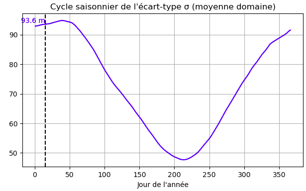
Etape 4 : Nous effectuons une ACP (Analyse en Composantes Principales) sur les anomalies normalisées de Z500 suivi d'un k-means clustering dans l'espace des phases engendré par les 12 composantes principales. Cela nous permet d'identifier les patterns dominants auxquels correspondent les 7 régimes de temps (centroïdes issus des k-means).
Le clustering attribue chaque jour à un cluster en minimisant la distance intra et inter-cluster dans l'espace des phases. À partir des centroïdes, nous pouvons retrouver les composites de Z500 associées et les nommer.
De plus, nous plaçons tous les jours étant plus proche de 0 que d'un centroïde dans une nouvelle categorie appelée "No Regime". Nous obtenons ainsi une première classification issue uniquement des k-means (Fig 6).
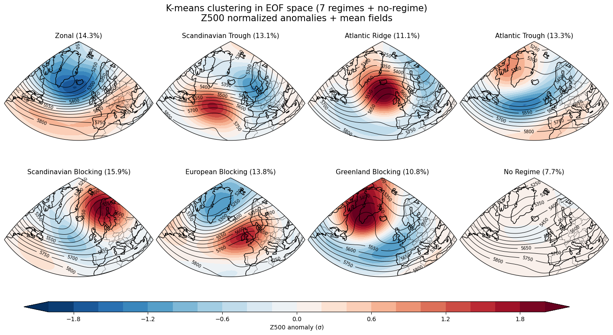
Etape 5 : Calcul du Weather Régime Index (Indice de Régime) Iwr.
L'approche par l'indice de régime permet de visualiser l'aspect temporel de la présence d'un régime dans une situation donnée.
Nous commençons par projeter l'anomalie normalisée de la journée sur les 7 clusters d'anomalies issus du k-means. Nous obtenons ainsi une mesure scalaire de la corrélation spatiale du champ d'anomalies instantanées à l'instant t (en chaque point de grille de latitude et de longitude dans le domaine des composantes principales) avec le champ d'anomalies moyen du cluster pour le régime (c'est-à-dire les anomalies moyennes du cluster)
Nous calculons ensuite un indice de régime adimensionnel pour chaque régime. Le calcul de l'indice se fait à partir des anomalies des projections (par rapport à la projection moyenne climatologique) normalisées par l'écart-type climatologique de la projection à partir de la formule suivante :
\[
I_{wr}(t) = \frac{P_{wr}(t) - \overline{P_{wr}}}{\sqrt{\frac{1}{N} \sum_{i=1}^{N} \left[ P_{wr}(t) - \overline{P_{wr}} \right]^2}}
\]
Nous obtenons ainsi un indice pour chaque régime au cours du temps (Fig 7).
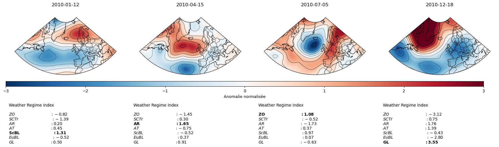
Etape 6 : Classification issue des indices.
Nous utilisons les indices pour déterminer le régime dominant pour chaque jour de la période.
L'idée est d'abord de déterminer les régimes qui sont actifs. Pour être considéré comme actif, il faut que l'indice correspondant au régime soit superieur à 0.9 pendant minimum 5 jours. On autorise cependant l'indice à descendre ponctuellemnt sous le seuil de 0.9 durant ces 5 jours.
Parmis les régimes actifs (il peut y en avoir plusieurs en même temps), le régime dominant est celui dont l'indice est le plus fort. Cependant, si l'indice du régime n'est pas le plus fort pendant au minimum 3 jours, alors le régime n'est pas considéré comme dominant (Fig 8).
Cela nous donne la classification par indice de régime qui sera ensuite utilisée pour les composites.
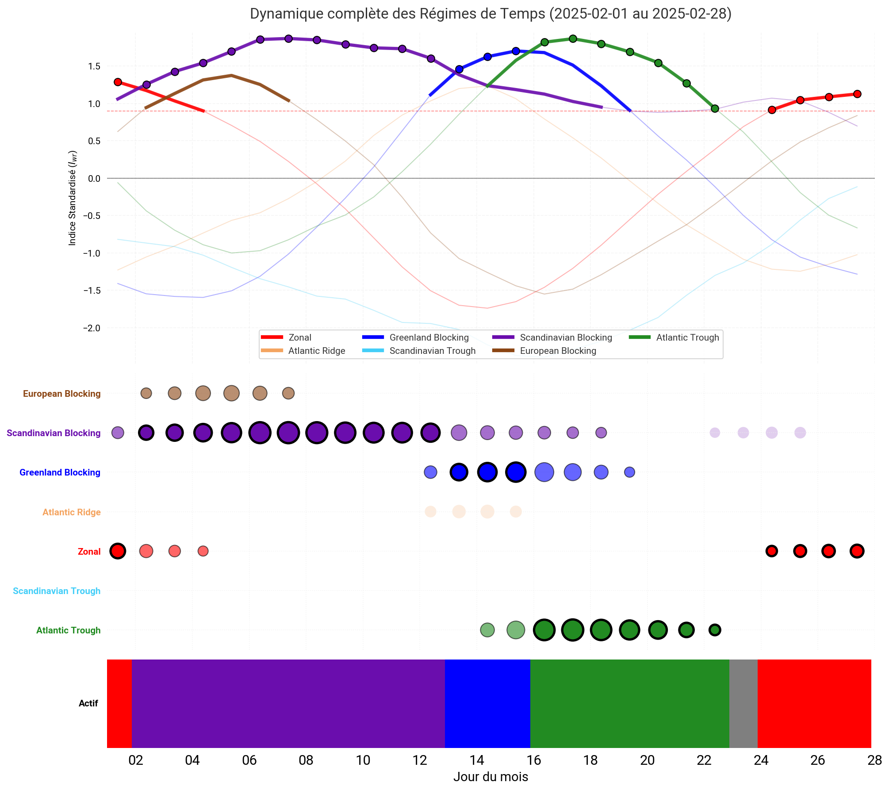
Méthode d'obtention des composites :
Etape 1 : Affichage des composites.
Nous avons commencé par établir pour chaque jour l'anomalie du champ considéré et nous avons normalisé cette anomalie afin de pouvoir la traiter convenablement.
À partir de l'indice de régime Iwr qui permet de déterminer le régime actif, nous avons rassemblé tous les jours de notre période correspondant à un même régime.
Ensuite, nous avons traité chaque régime individuellement en appliquant une moyenne par point.
Puis, nous avons calculé la moyenne des anomalies par point afin d'établir l'effet du régime sur le champ considéré sur le domaine (Température à 2m, Précipitations).
Enfin, nous avons superposé la Pmer afin de mettre en avant les centres d'action.
Nous proposons différents affichages, notamment un affichage au choix entre : 1 régime/4 saisons, 8 régimes/1 saison et 8 régimes/4 saisons (Fig 9).
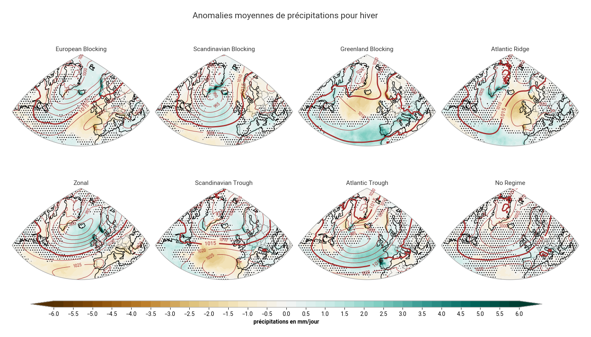
Etape 2 : Ajout d'un test de significativité.
Nous avons appliqué un test de significativité pour les composites 1 régime/4 saisons et 8 régimes/1 saison et non pour le composite 8 régimes/4 saisons du fait de la taille de ses vignettes.
Nous proposons ainsi un affichage de la non significativité sur le champ affiché en appliquant un masque sur les valeurs qui se trouvent en dessous du quantile Q2.5 et au-dessus du quantile Q97.5 qui affiche toutes les valeurs non significatives avec des points (Fig 10).
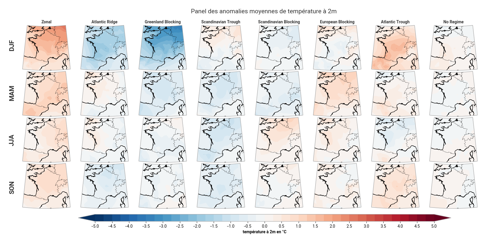
Etape 3 : Création des terciles.
Nous avons décidé de réaliser des terciles afin d'étudier les comportements extrêmes de chaque régime selon les saisons.
Pour cela, nous nous sommes placés sur le domaine France et avons regardé quels étaient les jours correspondants aux terciles inferieur et supérieur pour un champ particulier et pour une saison donnée (Température à 2m ou Précipitations).
Nous déterminons un indicateur national quotidien du paramètre considéré. Puis pour les terciles inférieurs (resp. supérieurs) de chaque régime, nous moyennons les 33% des indicateurs nationaux les plus bas (resp. les plus hauts) des jours associés au régime considéré.
Ce composite comporte trois cartes : au milieu, nous affichons la moyenne pour tous les jours correspondants au régime dans l'ensemble des données. Sur les cotés, les cartes représentent la moyenne des anomalies des jours correspondants aux terciles inférieur et supérieur pour le régime donné pour la saison donnée (Fig 11).
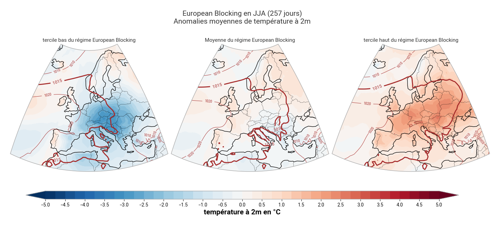
Etape 4 : Violin plots.
Un autre produit que nous proposons est l'affichage de violins plots. L'objectif a été d'afficher la distribution des anomalies sur la France pour chaque régime pour une saison, et de les comparer entre elles (Fig 12).
Les couleurs associées à chaque régime ont été choisies de sorte à ce qu'elles représentent au mieux l'advection d'air froid ou chaud sur la France durant chaque régime ainsi que l'humidité apportée.
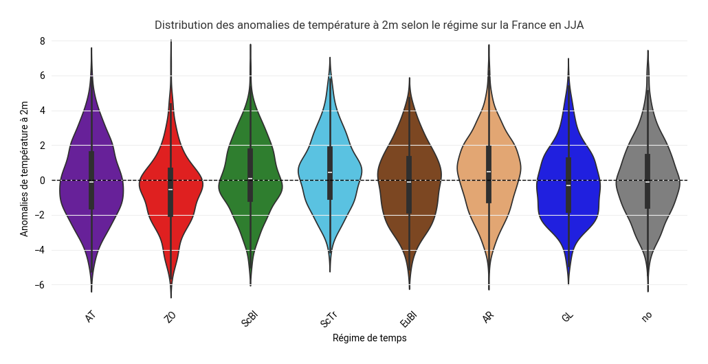